Table of Contents
- From Bandits to MDPs
- Agent-Environment Interface
- Observations, States & Markov Property
- Elements of an RL Agent
Lecture material: buntyke.github.io/rlcourse-mtech-fall26
Acknowledgements
The slides of this lecture are based on:
- Lecture 2 of Google DeepMind's 2015 lectures by David Silver
- Chapter 3 of Reinforcement Learning: An Introduction by Sutton & Barto
Lecture material: buntyke.github.io/rlcourse-mtech-fall26
From Bandits to MDPs
Recall: The Bandit Problem
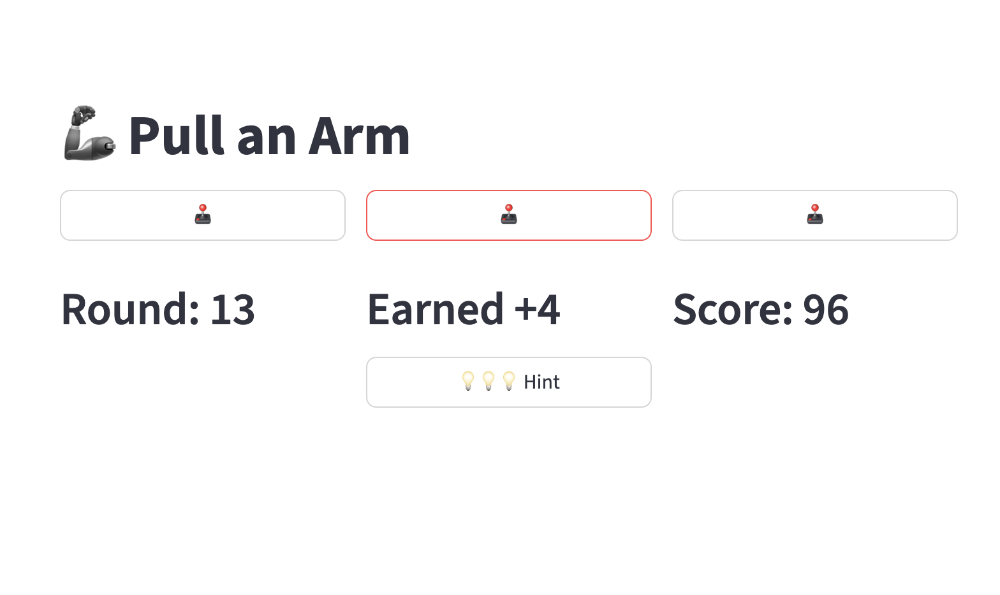
- Agent chooses one arm per round
- Receives a scalar reward \(R_t\)
- Goal: maximise total reward over time
Recall: The Bandit Problem
- Agent chooses one arm per round
- Receives a scalar reward \(R_t\)
- Goal: maximise total reward over time
- Key limitation: no state — actions do not affect future situations
What Changes in an MDP?
- The agent now exists in a state \(S_t\)
What Changes in an MDP?
- The agent now exists in a state \(S_t\)
- Actions influence both the immediate reward and the next state \(S_{t+1}\)
What Changes in an MDP?
- The agent now exists in a state \(S_t\)
- Actions influence both the immediate reward and the next state \(S_{t+1}\)
- Goal: maximise cumulative future reward — not just the next one
What Changes in an MDP?
- The agent now exists in a state \(S_t\)
- Actions influence both the immediate reward and the next state \(S_{t+1}\)
- Goal: maximise cumulative future reward — not just the next one
- This requires sequential decision making: the right action depends on context
Agent-Environment Interface
RL Formulation: Agent and Environment
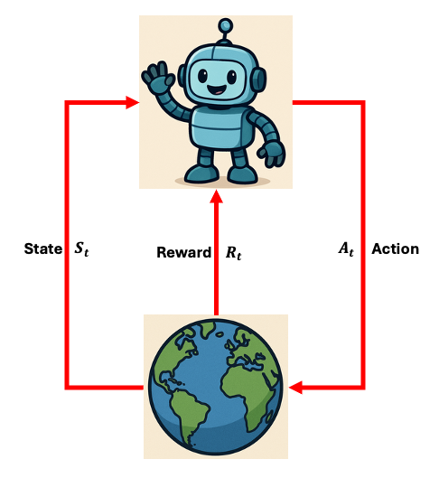
- At each time step \(t\), the agent:
- Receives state \(S_t\)
- Receives scalar reward \(R_t\)
- Executes action \(A_t\)
RL Formulation: Agent and Environment
- At each time step \(t\), the agent:
- Receives state \(S_t\)
- Receives scalar reward \(R_t\)
- Executes action \(A_t\)
- The environment:
- Receives action \(A_t\)
- Emits state \(S_{t+1}\)
- Emits reward \(R_{t+1}\)
RL Formulation: Agent and Environment
- At each time step \(t\), the agent:
- Receives state \(S_t\)
- Receives scalar reward \(R_t\)
- Executes action \(A_t\)
- The environment:
- Receives action \(A_t\)
- Emits state \(S_{t+1}\)
- Emits reward \(R_{t+1}\)
- This produces a trajectory: \(S_0,A_0,R_1,S_1,A_1,R_2,\ldots\)
RL Example: Grid World
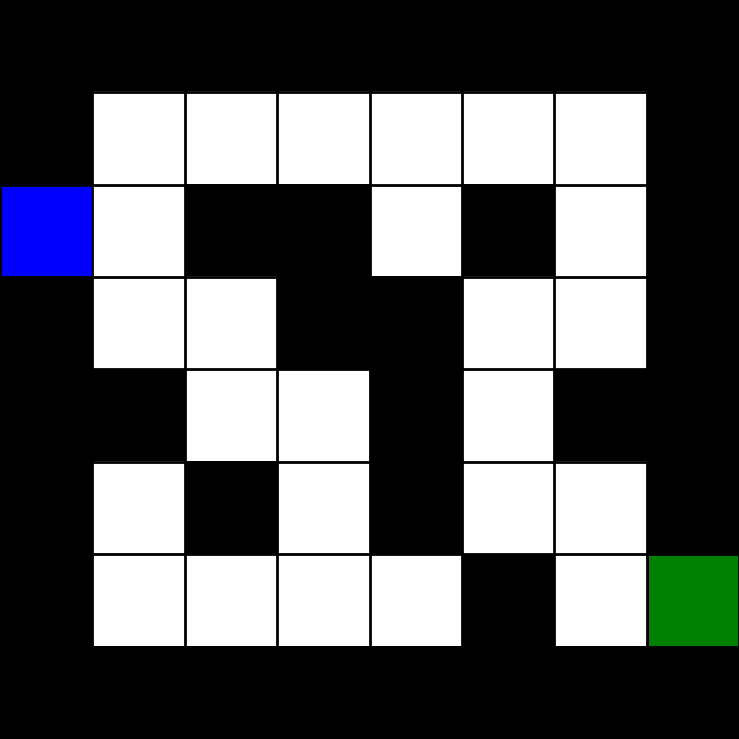
- Task: Robot spawns at Start (blue) and must reach Goal (green)
RL Example: Grid World

- State Space: Every non-wall (white) cell \(s_i\)
RL Example: Grid World
- State Space: Every non-wall (white) cell \(s_i\)
- State: Current position of robot (red)
RL Example: Grid World

- Action: North, South, East, West
RL Example: Grid World

- Reward: \(-1\) for every cell other than goal \[ R_t = \begin{cases} -1, & S_t \ne \text{Goal} \\ \;\,0, & S_t = \text{Goal} \end{cases} \]
RL Example: Grid World
- Environment: Action into a wall keeps the robot in place
\((S_1,A_W)\!\to\!S_2\), \((S_1,A_N)\!\to\!S_1\)
RL Example: Grid World

- Episode: Terminates when total reward reaches \(-30\) or robot reaches goal \[ \text{Return} = \sum_{t=1}^{T} R_t \]
RL Example: Grid World

- Episode: Terminates when total reward reaches \(-30\) or robot reaches goal \[ \text{Return} = \sum_{t=1}^{T} R_t \]
Portfolio Management: State, Action, Reward?

Reward Signal
- Reward \(R_t\) is a scalar feedback signal at each time step
- Measures how well the agent is doing at that instant
Reward Signal
- Reward \(R_t\) is a scalar feedback signal at each time step
- Measures how well the agent is doing at that instant
Reward Hypothesis
All goals can be expressed as maximisation of expected cumulative reward
All goals can be expressed as maximisation of expected cumulative reward
Reward Signal
- Reward \(R_t\) is a scalar feedback signal at each time step
- Measures how well the agent is doing at that instant
Reward Hypothesis
All goals can be expressed as maximisation of expected cumulative reward
All goals can be expressed as maximisation of expected cumulative reward
- Reward communicates what to achieve — not how to achieve it
Observations, States & Markov Property
Observations vs States
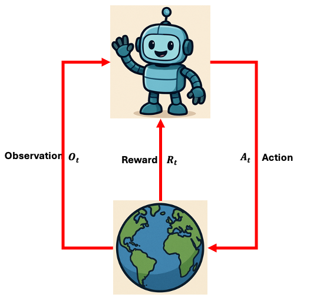
- Observation \(O_t\): what the agent actually perceives from the environment
Observations vs States
- Observation \(O_t\): what the agent actually perceives from the environment
- At each step the agent:
- Receives observation \(O_t\) and reward \(R_t\)
- Executes action \(A_t\)
Observations vs States
- Observation \(O_t\): what the agent actually perceives from the environment
- At each step the agent:
- Receives observation \(O_t\) and reward \(R_t\)
- Executes action \(A_t\)
- State \(S_t\): a summary of history used to select actions
History and State
- History is the full sequence of observations, actions, and rewards: \[ H_t = O_0, A_0, R_1, O_1, A_1, \ldots, A_{t-1}, R_t, O_t \]
- What happens next depends on the history:
- Agent selects the next action \(A_t\)
- Environment returns \(R_{t+1}, O_{t+1}\)
- State is a sufficient summary of history for decision-making: \[ S_t = f(H_t) \]
Environment State
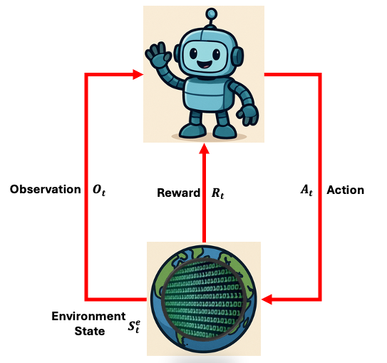
- Environment state \(S_t^e\): the environment's private internal representation
Environment State
- Environment state \(S_t^e\): the environment's private internal representation
- Used to generate the next observation and reward
Environment State
- Environment state \(S_t^e\): the environment's private internal representation
- Used to generate the next observation and reward
- May be invisible to the agent, or contain irrelevant information
Agent State
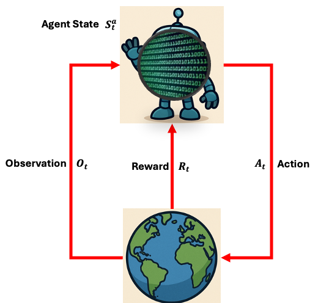
- Agent state \(S_t^a\): the agent's own internal representation
Agent State
- Agent state \(S_t^a\): the agent's own internal representation
- Information the RL algorithm uses to pick the next action
Agent State
- Agent state \(S_t^a\): the agent's own internal representation
- Information the RL algorithm uses to pick the next action
- Can be any function of history: \[ S_t^a = g(H_t) \]
Agent State: Rat Example
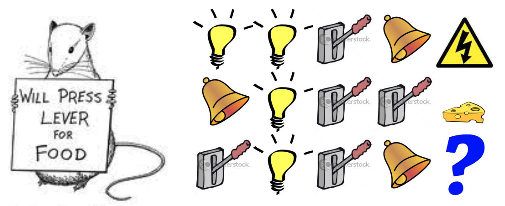
- What should the agent state be?
- Last 3 items in sequence?
- Counts of lights, bells, and levers?
- Complete sequence?
Markov State (Information State)
Markov Property
A state \(S_t\) is Markov if and only if: \[ \mathbb{P}[S_{t+1} \mid S_t] = \mathbb{P}[S_{t+1} \mid S_0, S_1, \ldots, S_t] \]
A state \(S_t\) is Markov if and only if: \[ \mathbb{P}[S_{t+1} \mid S_t] = \mathbb{P}[S_{t+1} \mid S_0, S_1, \ldots, S_t] \]
Markov State (Information State)
Markov Property
A state \(S_t\) is Markov if and only if: \[ \mathbb{P}[S_{t+1} \mid S_t] = \mathbb{P}[S_{t+1} \mid S_0, S_1, \ldots, S_t] \]
A state \(S_t\) is Markov if and only if: \[ \mathbb{P}[S_{t+1} \mid S_t] = \mathbb{P}[S_{t+1} \mid S_0, S_1, \ldots, S_t] \]
- The future is independent of the past given the present: \[ H_{1:t} \;\to\; S_t \;\to\; H_{t+1:\infty} \]
Markov State (Information State)
Markov Property
A state \(S_t\) is Markov if and only if: \[ \mathbb{P}[S_{t+1} \mid S_t] = \mathbb{P}[S_{t+1} \mid S_0, S_1, \ldots, S_t] \]
A state \(S_t\) is Markov if and only if: \[ \mathbb{P}[S_{t+1} \mid S_t] = \mathbb{P}[S_{t+1} \mid S_0, S_1, \ldots, S_t] \]
- The future is independent of the past given the present: \[ H_{1:t} \;\to\; S_t \;\to\; H_{t+1:\infty} \]
- A Markov state is a sufficient statistic for all future interaction
- Both the environment state \(S_t^e\) and full history \(H_t\) are always Markov
Fully Observable Environments
Full Observability: agent directly observes the environment state
\[ O_t = S_t^e = S_t^a = S_t \]Formally this is a Markov Decision Process (MDP)
Partially Observable Environments
Partial Observability: agent sees only limited information
Formally a POMDP — agent must construct its own state:
- Complete history: \(S_t^a = H_t\)
- Recurrent network: \(S_t^a = \sigma(S_{t-1}^a W_s + O_t W_o)\)
- Belief state: \(S_t^a = (p(s_1), \ldots, p(s_n))\)
Elements of an RL Agent
Components of an RL Agent
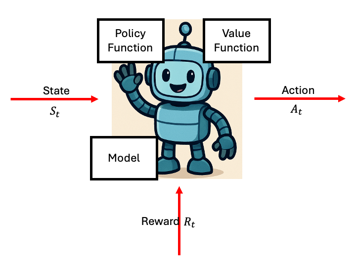
- Policy: agent's behaviour function
- Value Function: how good is each state and/or action?
- Model: agent's representation of the environment
Policy Function
- Agent's behaviour: a map from state to action
- Deterministic: \(a = \pi(s)\)
- Stochastic: \(\pi(a|s) = \mathbb{P}[A_t = a \mid S_t = s]\)
Policy Function
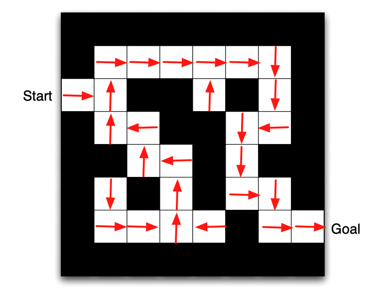
- Agent's behaviour: a map from state to action
- Deterministic: \(a = \pi(s)\)
- Stochastic: \(\pi(a|s) = \mathbb{P}[A_t = a \mid S_t = s]\)
- Arrows show \(\pi(s)\) for each state
Value Function
- Prediction of future reward used to evaluate states
- \[ v^\pi(s) = \mathbb{E}^\pi\!\left[ R_{t+1} + \gamma R_{t+2} + \gamma^2 R_{t+3} + \cdots \;\middle|\; S_t = s \right] \]
Value Function
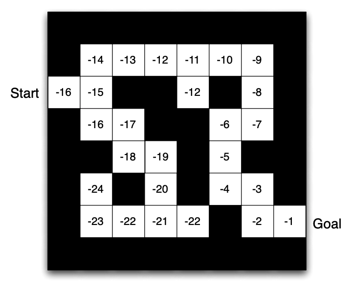
- Prediction of future reward used to evaluate states
- \[ v^\pi(s) = \mathbb{E}^\pi\!\left[ R_{t+1} + \gamma R_{t+2} + \gamma^2 R_{t+3} + \cdots \;\middle|\; S_t = s \right] \]
- Numbers in grid represent \(v^\pi(s)\)
Model
- Predicts what the environment does next
- Transition model: \(\mathcal{P}_{ss'}^a = \mathbb{P}[S_{t+1}=s' \mid S_t=s, A_t=a]\)
- Reward model: \(\mathcal{R}_s^a = \mathbb{E}[R_{t+1} \mid S_t=s, A_t=a]\)
Model
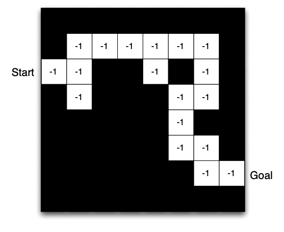
- Predicts what the environment does next
- Transition model: \(\mathcal{P}_{ss'}^a = \mathbb{P}[S_{t+1}=s' \mid S_t=s, A_t=a]\)
- Reward model: \(\mathcal{R}_s^a = \mathbb{E}[R_{t+1} \mid S_t=s, A_t=a]\)
- May be an imperfect representation of the environment
Types of RL Agents
- Value Based
- No explicit policy (implicit)
- Learns value function
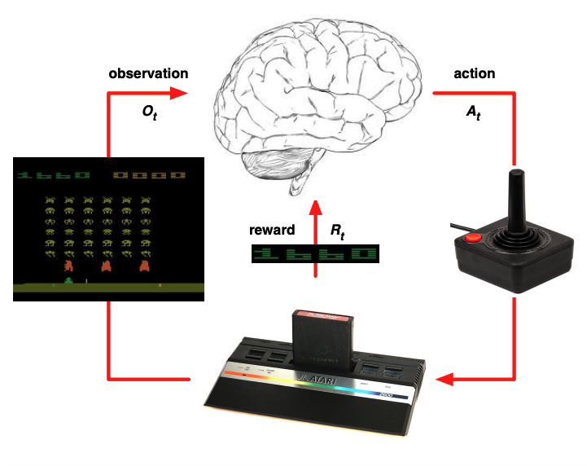
Types of RL Agents
- Value Based
- No explicit policy (implicit)
- Learns value function
- Policy Based
- Learns policy directly
- No value function
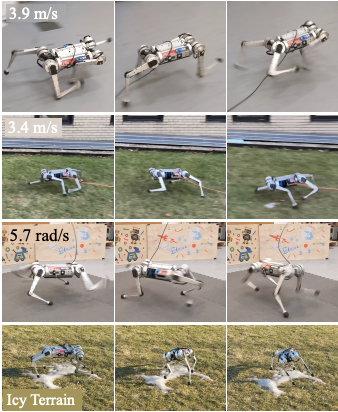
Types of RL Agents
- Value Based
- No explicit policy (implicit)
- Learns value function
- Policy Based
- Learns policy directly
- No value function
- Actor Critic
- Learns both policy and value function
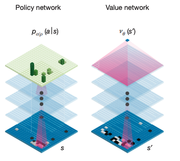
Types of RL Agents
- Model Free
- Policy and/or value function
- No model of the environment
Types of RL Agents
- Model Free
- Policy and/or value function
- No model of the environment
- Model Based
- Policy and/or value function
- Learns a model to plan ahead
Prediction and Control
- Prediction: evaluate the future
- Given a policy, what is the value function?
- Control: optimise the future
- Find the best policy
Grid World: Prediction
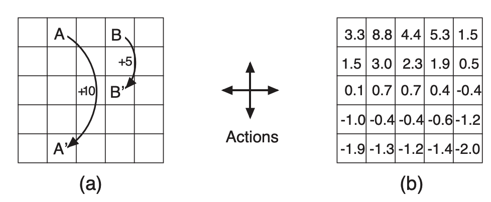
What is the value function for the uniform random policy?
Grid World: Control
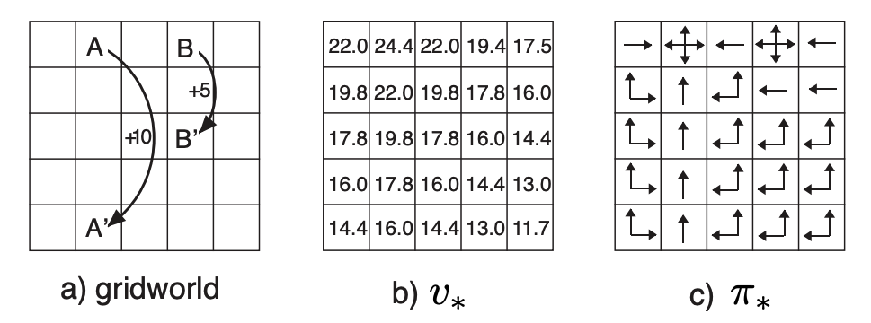
What is the optimal value function and optimal policy?
Summary
- MDPs extend bandits: actions now shape state and all future rewards
- The interface produces a trajectory \(S_0,A_0,R_1,S_1,A_1,R_2,\ldots\)
- A Markov state captures all that history needs to predict the future
- In a fully observable MDP: \(O_t = S_t^e = S_t^a\)
- RL agents have three components: Policy, Value Function, Model
- Next lecture: returns, discounting, episodic vs continuing tasks